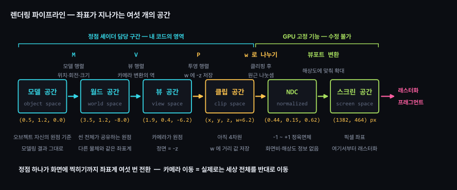
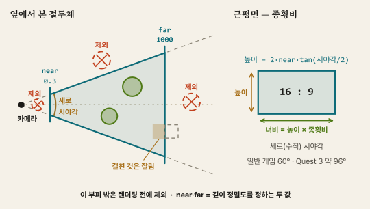
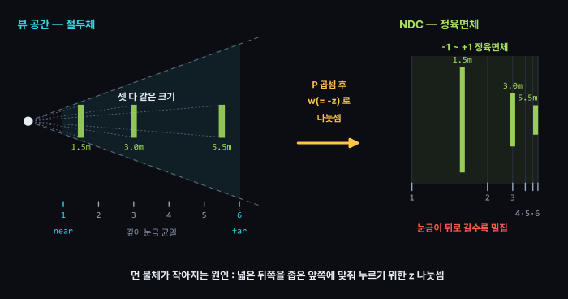
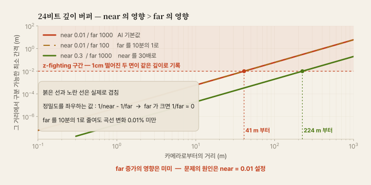
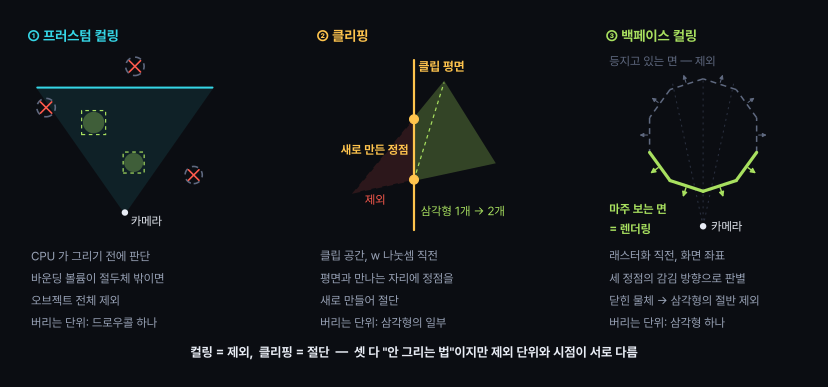
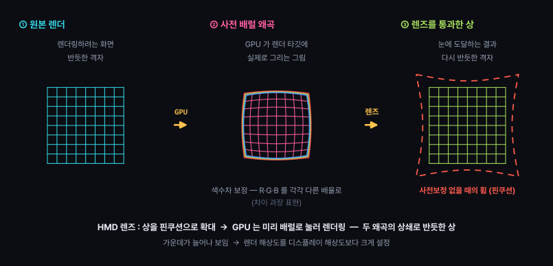
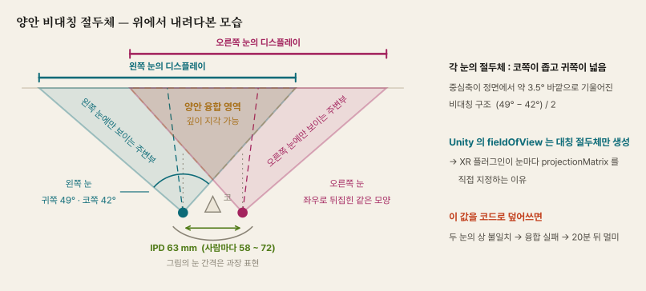

정점 처리와 래스터화, 카메라와 뷰포트, 프로젝션
3D 점 하나가 화면의 픽셀이 되기까지 거치는 여섯 개 좌표 공간을 순서대로 말하고, 각 단계에서 무엇이 바뀌는지 한 문장으로 설명
카메라의 near·far 값으로 특정 거리의 깊이 구분 간격을 직접 계산하고, 깜빡임(z-fighting)이 생길지 판정 · near 조정으로 해결
헤드셋이 일부러 찌그러진 그림 두 장을 그리는 이유를 설명하고, Unity에서 개발자가 바꿔도 되는 값(near·far)과 손대면 안 되는 값 구분
모델 → 월드 → 뷰 → 클립 → NDC → 화면 · 그 사이에서 버려지는 요소들
3D 모델을 이루는 꼭짓점 하나 — 위치뿐 아니라 색 · 법선 · UV 를 함께 적은 «점 카드»
정육면체 = 꼭짓점 8개지만 면마다 법선이 달라 Unity 에서는 정점 24개
정점 셰이더가 정점마다 한 번씩 실행 → 정점 수 = 계산 비용의 한 축
Game 뷰 Stats 의 Verts · 메시 Inspector 아래 미리보기의 Vertices 수
GPU 안에서 정점마다 · 픽셀마다 수천 번 동시에 도는 작은 프로그램 — 위치를 정하는 정점용, 색을 정하는 픽셀용
정점 셰이더 = 점에 행렬 곱하기 · 프래그먼트 셰이더 = 그 칸의 색 (빨강 0.8, 초록 0.2 …)
Material Inspector 맨 위 Shader 드롭다운 (Universal Render Pipeline/Lit 등) · 6주차 Shader Graph
화면 위 삼각형이 모눈종이의 어느 칸(픽셀)을 덮는지 골라내는 단계
오늘 도해의 삼각형 → 칸 중심이 안에 든 44칸 선택
고른 칸 수만큼 프래그먼트 셰이더 실행 → 화면을 가득 채우는 물체가 비싼 이유
GPU 고정 기능 · Scene 뷰 Draw Mode → Wireframe 으로 삼각형 확인
래스터화가 만든 «픽셀 후보» 하나 — 색과 깊이 시험을 아직 통과하지 못한 상태
상자 뒤에 숨은 벽도 프래그먼트는 생김 → 깊이 비교에서 지면 버려짐
물체가 겹칠수록 같은 칸에 여러 번 생김(오버드로) → 12주차 성능 주제
카메라에 찍힐 수 있는 공간 전부 — 꼭대기를 잘라낸 피라미드 모양 유리 상자
시야각 60° · near 0.3 · far 1000 → 앞벽 높이 약 35 cm · 뒷벽 높이 약 1.15 km
상자 밖 물체는 그리지 않음 → 성능의 출발점 · 상자 모양 = 투영 행렬
Scene 뷰에서 Camera 선택 시 보이는 흰 선 피라미드
절두체의 앞벽 · 뒷벽까지 거리 — 이보다 가깝거나 먼 것은 잘려서 안 그림
Unity 기본 near 0.3 · far 1000 · near 를 0.01 로 줄이면 먼 바닥이 깜빡임 (오늘의 함정)
Camera Inspector → Projection → Clipping Planes 의 Near · Far
화면 크기와 상관없이 가로 · 세로 · 깊이를 모두 −1~+1 로 맞춘 공통 좌표 — 픽셀 대신 «몇 %» 로 적은 설계도
화면 정중앙 = (0, 0) · 오른쪽 끝 = x +1 · x 0.5 = 폭의 75% 지점
해상도가 달라도 같은 계산 재사용 · 이 범위 밖 = 화면 밖 (깊이 범위는 API 마다 다름)
픽셀마다 «지금까지 그린 것 중 가장 가까운 거리» 를 적어 두는 숫자 표 — 칸마다 붙은 메모지
1920×1080 화면 = 메모지 약 207만 장 · 24비트면 한 장에 약 1677만 단계
그리는 순서와 무관하게 앞뒤가 맞는 이유 · 단계가 유한해서 z-fighting 발생
Window → Analysis → Frame Debugger 에서 그리기 단계별 확인
처음 등장할 때마다 다시 풀어 설명 · 지금은 낯이 익는 정도로 충분
2주차 : 4×4 행렬로 물체를 이동·회전·크기 조절 → 물체가 세상 어디에 놓일지 결정
하지만 "세상 어디에 있는가"와 "화면 어디에 찍히는가"는 다른 질문 → 행렬 두 개를 더 곱해야 화면 위치 확정
더 곱하는 두 행렬 = 뷰 행렬(카메라 기준으로 다시 놓기) · 투영 행렬(평평한 화면에 눌러 담기)
Unity Camera 컴포넌트의 인스펙터 값 → 이 두 행렬을 자동 생성 · 자세한 풀이는 다음 장
파이프라인 = 공장 컨베이어 벨트 · 정점이라는 부품이 벨트를 타고 "배치 → 카메라 기준 정렬 → 화면에 눌러 담기 → 칸 칠하기" 공정을 차례로 통과 · 앞 공정 결과가 다음 공정의 재료
비유의 한계 : 실제 GPU에는 벨트가 수천 줄 · 정점 수천 개를 동시에 처리
세상 전체를 카메라 기준으로 다시 놓는 행렬 — 카메라 위치를 원점, 보는 방향을 −Z 로 맞춤
카메라 (0, 0, 5) → 세상 전체를 (0, 0, −5) 이동 → 원점의 상자가 «정면 5 m»
카메라 Transform 을 움직이면 Unity 가 자동 갱신 · VR 에서는 헤드셋이 갱신
스크립트 Camera.worldToCameraMatrix · 셰이더 UNITY_MATRIX_V
3D 공간을 평평한 화면으로 눌러 담는 행렬 — 먼 것이 작아지게 만드는 장치가 여기 들어 있음
시야각 60° · 종횡비 16:9 · near 0.3 · far 1000 → 이 네 숫자로 16칸 행렬 완성
VR 에서는 헤드셋이 눈마다 다른 행렬을 넣음 → 코드로 덮어쓰면 입체 붕괴
Camera Inspector 의 Field of View · Clipping Planes · 스크립트 Camera.projectionMatrix
어떤 변환을 정확히 되돌리는 변환 — «앞으로 5 걷기» 의 역 = «뒤로 5 걷기»
카메라를 (0, 0, 5) 로 옮긴 변환의 역행렬 = 세상을 (0, 0, −5) 로 옮기는 변환 = 뷰 행렬
스크립트 Matrix4x4.inverse · transform.worldToLocalMatrix
정점이 픽셀이 될 때까지 GPU 가 정해진 순서로 처리하는 작업 흐름 — 공장 컨베이어 벨트
정점 셰이더 → 클리핑 → 원근 나눗셈 → 뷰포트 → 래스터화 → 프래그먼트 셰이더 → 깊이 비교
문제가 어느 공정에서 생겼는지 알아야 고칠 곳(코드 · 설정 · 하드웨어) 선택 가능
Window → Analysis → Frame Debugger — 한 프레임을 그리기 주문 단위로 되감아 보기

| 공간 | "원점"은 어디인가 | 여기서 하는 일 | 담당 |
|---|---|---|---|
| 모델 Model | 물체 자신의 중심 | 모델링 툴에서 만든 그대로의 좌표 | 정점 셰이더 (내 코드) |
| 월드 World | 씬 전체의 기준점 | 모델 행렬로 물체를 세상에 배치 | |
| 뷰 View | 카메라 위치 | 뷰 행렬로 "카메라에서 얼마나 떨어졌나" 계산 | |
| 클립 Clip | 카메라 · 4칸 좌표 | 투영 행렬 적용 직후 · 절두체 밖 판정과 잘라내기 | |
| NDC | 화면 정중앙 | w로 나눈 결과 · 모든 값이 −1~+1 | GPU 고정 기능 (수정 불가) |
| 스크린 Screen | 화면 모서리 | −1~+1 을 실제 픽셀 번호로 확대 |
같은 점이라도 어느 공간에서 재느냐에 따라 좌표 숫자가 달라짐 → "좌표가 이상하다" 싶으면 먼저 어느 공간의 값인지 확인
GPU에는 "카메라"라는 물건이 없음 → 카메라는 항상 원점에서 −Z 방향을 본다고 가정 → 그래서 카메라를 움직이는 대신 세상 전체를 반대로 이동 (위 식의 역행렬 = 되돌리는 변환)
손계산 · 카메라 위치 (0, 0, 5)
→ 뷰 행렬 = 세상 전체를 (0, 0, −5) 이동
→ 월드 원점의 상자는 뷰 공간에서 \( z=-5 \)
= "카메라 정면 5m 앞"
뷰 행렬 = 고정 카메라 앞에서 무대 세트를 미는 촬영 · 카메라는 삼각대에 고정, 대신 세트 전체를 반대 방향으로 밀어 옮김 · 찍힌 화면은 카메라를 움직인 것과 똑같음 · 기차 창밖 풍경이 뒤로 흘러가는 느낌과 같은 원리
11주차 연결 : VR에서 카메라 Transform 직접 조작 금지의 근거
삼각대에 묶은 카메라 앞에서 무대 세트 밀기 · ①과 ②는 상자와 카메라의 사이 간격이 똑같음 · 바뀐 것은 원점(자주색 십자)이 어디냐뿐 → 뷰 행렬 = 원점을 카메라로 옮기는 변환

절두체(frustum) : 꼭대기를 잘라낸 피라미드 모양의 공간 · 카메라에 찍힐 수 있는 범위 전부
이 상자 밖의 물체는 렌더링 대상에서 제외 → 안 그리는 만큼 GPU 시간 절약
카메라 앞에 놓인 잘린 피라미드 모양 유리 상자 · 상자 안에 들어온 것만 사진에 찍힘 · 상자 밖은 아무리 가까워도 촬영 안 됨
| 값 | Unity | 결정 요소 |
|---|---|---|
| 시야각 FOV | fieldOfView | 상자가 벌어지는 각도 · Unity는 세로 기준 · 크게 하면 넓게 보이지만 가장자리가 늘어남(광각 렌즈 효과) |
| 종횡비 Aspect | aspect | 가로÷세로 · 16:9 화면이면 약 1.78 · 창 크기를 바꾸면 자동 변경 |
| 근평면 near | nearClipPlane | 상자의 앞벽 · 이보다 가까운 물체는 잘림 · Unity 기본값 0.3 |
| 원평면 far | farClipPlane | 상자의 뒷벽 · 이보다 먼 물체는 잘림 · Unity 기본값 1000 |
시야각 = 줌 렌즈 · 광각(큰 값)은 방 전체가 담기지만 가장자리가 늘어나고, 망원(작은 값)은 좁지만 반듯함
넷 중 두 개(near·far)가 도입 질문의 깜빡임과 관련 · 그중 어느 쪽이 진짜 원인인지는 깊이 블록에서 계산으로 확인
유색 물체 = 상자 안 · 회색 = 상자 밖 · 드래그로 시점 회전
뷰포트(viewport) : 그림이 실제로 찍힐 화면 속 직사각형 영역 · 보통 화면 전체
W·H = 뷰포트의 가로·세로 픽셀 수 · NDC(−1~+1)에는 해상도 정보가 없음 → 해상도는 마지막에 곱해서 반영
손계산 · \( x_{ndc}=0.5 \), 1920 폭 화면
\( (0.5+1)\times 960 = 1440 \) 번째 픽셀
같은 점이 4K(3840 폭)에서는 2880 번째
→ 둘 다 화면 폭의 75% 지점 · 구도 동일
뷰포트를 화면 왼쪽 절반으로 지정 → 그 절반 안에 −1~+1 배치 · VR의 좌·우 눈이 이 방식으로 한 장의 그림을 나눠 씀
NDC = "가로 몇 %, 세로 몇 %"로 적은 사진 설계도 · 뷰포트 = 인화 · 같은 설계도를 엽서로 뽑든 포스터로 뽑든 구도는 그대로, 점의 개수만 다름
눈에서 화면(near 평면)까지 거리 \( n \) · 물체까지 거리 \( -z \)
(카메라가 −Z를 보므로 앞쪽 물체는 \( z \lt 0 \))
손계산 · \( n=1 \), 점 \( (2,\,1,\,-4) \)
\( x' = 1\cdot 2 / 4 = 0.5 \), \( y' = 1\cdot 1/4 = 0.25 \)
같은 점을 8m 뒤로(\( z=-8 \)) → \( x'=0.25 \) · 두 배 멀면 절반 크기
창문 유리에 바깥 풍경 따라 그리기 · 눈을 한 자리에 고정하고 유리 위에 나무 윤곽을 그리면, 멀리 있는 나무일수록 유리 위 그림이 작아짐 · 유리 = near 평면, 그림 크기 = 실제 크기 ÷ 거리
원리 : 거리로 나눗셈 · 멀수록 \( -z \) 증가 → 나눈 결과 감소
문제 : 행렬 곱셈은 곱하고 더하기만 가능 → "z로 나누기"를 직접 표현할 방법 없음
창문 유리에 바깥 풍경 따라 그리기를 옆에서 본 모습 · 눈은 고정, 유리(near 평면)는 눈에서 1 · 같은 높이의 나무도 두 배 멀면 유리 위 그림은 절반
\( t=\tan(\text{시야각}/2) \) · \( a \) = 종횡비 · \( n, f \) = near, far
w = 좌표 (x, y, z) 뒤에 붙는 네 번째 칸 · 2주차 점(w=1) · 방향(w=0) 구분에 쓰던 그 칸
이번에는 이 칸이 «나중에 나눌 거리» 를 담는 메모 칸 · 자세한 풀이는 다음 장
마지막 행의 −1 → 곱셈 결과의 w 칸에 −z(=거리)가 담김 → 행렬로는 못 하는 나눗셈을 잠시 미뤄 두었다가 클리핑 이후 GPU가 w 로 나눔
(x, y, z) 뒤에 네 번째 칸 w 를 붙인 4칸 좌표 — 계산을 미뤄 둘 «메모 칸» 이 하나 더 달린 주소
점 (2, 1, −4) → (2, 1, −4, 1) · 투영 행렬을 곱한 뒤 (2, 1, 2.06, 4) — w 칸에 거리 4
행렬 곱셈 하나로 이동 · 회전 · 원근을 모두 표현하는 비결 · 2주차 점(w=1) · 방향(w=0) 구분과 같은 칸
셰이더 float4 · 스크립트 Vector4 · Matrix4x4 와의 곱셈
클립 좌표의 x, y, z 를 w 로 나누는 단계 — 택배 상자 메모에 적힌 수로 마지막에 나누기
(2, 1, 2.06, 4) ÷ 4 → (0.5, 0.25, 0.52) · 같은 점이 8 m 뒤면 8로 나뉘어 절반 크기
먼 물체가 작아지는 실제 순간 · 깊이 값도 같이 나뉘어 뒤쪽 눈금이 성겨짐 (z-fighting 의 씨앗)
GPU 고정 기능 — 정점 셰이더가 끝난 뒤 자동 수행 · 코드로 끌 수 없음
조건 : 시야각 90° (\( t=1 \)), 종횡비 1, \( n=1,\ f=100 \) · 뷰 공간의 점 \( (2,\,1,\,-4) \)
투영 · 1 질문의 답
먼 물체가 작아지는 원인 = 투영 행렬 마지막 행의 −1
거리를 w 칸에 옮겨 두고 → GPU가 w 로 나눔
→ 멀수록 큰 수로 나뉘어 작아짐
w = 택배 상자에 붙인 "나중에 이 수로 나눌 것" 메모 · 행렬 공정에서는 나눌 수 없으니 나눌 값을 상자(w 칸)에 적어 보내고, 다음 공정(GPU)이 메모를 보고 나눔

절두체 → 정육면체 · 넓은 먼 쪽일수록 크게 눌림 · 깊이 눈금도 함께 눌려 뒤쪽이 성기게 됨
상자 모양 : 절두체
w = −z 로 나눗셈 → 멀수록 작아짐
사람 눈·카메라와 같은 보임새
1인칭·3인칭 게임, VR
상자 모양 : 직육면체
w = 1 → 나눗셈 효과 없음
거리와 무관하게 크기 일정
UI, 도면, 아이소메트릭, 그림자맵
VR에서 직교투영 사용 불가 → 거리에 따른 크기 변화와 두 눈 사이의 시차(어긋남)가 사라져 입체감 소멸
10주차 연결 : 화면 고정 UI가 VR에서 작동하지 않는 이유
깊이 버퍼(depth buffer) : 화면과 같은 크기의 숫자 표 · 픽셀마다 "지금까지 그린 것 중 가장 가까운 거리" 한 칸
픽셀마다 붙은 "지금까지 가장 가까운 거리" 메모지 · 새 물체가 오면 메모지와 비교 → 더 가까우면 색을 덮어 칠하고 메모 수정, 더 멀면 버림
덕분에 그리는 순서와 무관하게 앞뒤가 맞음
단, 메모지에 적을 수 있는 숫자의 가짓수가 유한 (24비트 = 약 1677만 단계) → 아주 가까운 두 거리는 같은 숫자로 기록
거리 \( d \) 를 NDC 깊이(−1~+1)로 바꾸는 식
거리 \( d \) 가 분모에 있음 → \( 1/d \) 곡선 → near 근처는 숫자가 빠르게 변하고(촘촘), 멀어질수록 거의 안 변함(성김)
가까운 곳엔 촘촘하고 먼 곳엔 듬성듬성한 자 · 눈금 개수는 정해져 있는데 대부분이 자의 앞부분에 몰림 → 먼 곳에서는 2mm 차이를 잴 눈금이 없음
near=0.1, far=1000 이면 → 깊이 숫자의 절반이 0.1m~0.2m 구간에 배정 · 나머지 999.8m 가 남은 절반을 나눠 씀
near=0.1, far=1000 · 깊이 버퍼에 실제 저장되는 0~1 값 (\( z_{ndc} \) 를 0~1 로 옮긴 것)
| 거리 d | 0.2 m | 1 m | 10 m | 100 m | 1000 m |
|---|---|---|---|---|---|
| 저장 값 | 0.500 | 0.900 | 0.990 | 0.999 | 1.000 |
| 쓰고 남은 몫 | 절반 소진 | 90% 소진 | 99% 소진 | 99.9% 소진 | — |
10m~1000m 의 넓은 풍경 전체가 0.99~1.00 사이의 1% 안에서 앞뒤를 가려야 함 → 먼 곳의 바닥·그림자가 깜빡이는 직접적 이유
앞부분에만 눈금이 빽빽한 자 · 붉은 눈금 9개가 처음 1 m 에 몰려 있고 1~10 m 에는 눈금이 거의 없음 → 먼 곳의 2mm 차이를 잴 눈금 부족

\( \Delta d \) = 거리 \( d \) 에서 구분 가능한 최소 간격 (깊이 분해능)
\( b \) = 깊이 버퍼 비트 수 · 보통 24 → \( 2^{24}\approx 1677\text{만} \)
| near / far | 1/n − 1/f | 100m 에서 Δd | |
|---|---|---|---|
0.01 / 10000 | 100.0 | 약 60 mm | 깜빡임 |
0.01 / 100 | 99.99 | 약 60 mm | 동일하게 깜빡임 |
0.3 / 10000 | 3.33 | 약 2 mm | 거의 정상 |
손계산 · near 0.01, 100m
\( 100^2 \times 100 \div 16{,}777{,}216 \approx 0.06\,\text{m} \) = 6cm
→ 6cm 보다 가까이 붙은 두 면은 같은 깊이로 기록
far 100배 감소 → 변화 없음 · near 30배 증가 → 정밀도 약 30배 향상 — 오늘 수업의 핵심 한 줄
공식의 괄호 \( \tfrac{1}{n}-\tfrac{1}{f} \) 를 숫자로 비교
| 값 | 1/값 | |
|---|---|---|
| near 0.01 | 0.01 | 100 |
| near 0.3 | 0.3 | 3.33 |
| far 100 | 100 | 0.01 |
| far 10000 | 10000 | 0.0001 |
far 쪽의 1/f 는 어차피 0에 가까움 → far 를 아무리 바꿔도 괄호 값이 거의 그대로 · near 쪽의 1/n 이 괄호 값을 사실상 혼자 결정
정해진 눈금 1677만 개를 나눠 주는 예산 · 배분 규칙이 "카메라에 가까울수록 많이"라서, near 를 작게 잡을수록 카메라 코앞 몇 cm 에 눈금을 다 써 버림 · far 를 줄이는 것은 이미 거의 빈 지갑의 끝자리를 조정하는 셈
참고 : 최신 PC·콘솔은 깊이를 뒤집어 저장(reversed-Z)하고 32비트 실수를 써서 실제 수치가 훨씬 좋음 · 모바일·Quest는 기기·설정마다 다름 · near 우선 원칙은 동일
청록 = 바닥면 · 분홍 = 그 위 2mm 에 붙인 스티커 · 왼쪽 아래 가까운 쌍은 간격이 같아도 정상
거의 같은 깊이의 두 면(바닥과 그림자 · 스티커)이 깊이 버퍼에 같은 숫자로 기록 → 프레임마다 이기는 쪽이 바뀌며 깜빡임
바닥 위 2 mm 스티커 · 100 m 지점 · near 0.01 → 구분 간격 약 6 cm 라 두 면이 같은 숫자
코드가 멀쩡해도 발생 → 셰이더 · 텍스처를 뒤지면 시간 낭비
1cm 눈금 자로 2mm 차이 나는 두 종이 높이 재기 · 둘 다 같은 눈금 → 누가 위인지 매번 동전 던지기 · 카메라가 조금 움직일 때마다 결과가 바뀌어 무늬가 꿈틀거림
원인 : 코드가 아니라 Camera 의 near 값이 너무 작음 (예 : 0.01)
→ 깊이 눈금 대부분이 카메라 코앞에 몰림
→ 100m 지점에서는 약 6cm 보다 가까운 두 면을 구분 불가
해결 : near 를 카메라가 실제로 다가갈 최소 거리까지 키움 (예 : 0.3)
→ 100m 지점 구분 간격 약 2mm 로 개선
far 만 줄이는 것은 효과 거의 없음
| # | 조치 | 효과 |
|---|---|---|
| 1 | near 증가 · 카메라가 실제로 접근 가능한 최소 거리까지 | 가장 큼 · 대부분 이것으로 해결 |
| 2 | 겹친 면 분리 · 바닥과 데칼을 같은 높이에 두지 않기 | 구조적 해결 |
| 3 | 데칼·간판에 깊이 오프셋 적용 (셰이더 Offset, URP Decal) | 국소적 해결 |
| 4 | 깊이 버퍼가 16비트로 설정돼 있지 않은지 확인 (24비트 대비 눈금 256분의 1) | 모바일·Quest 프로젝트 설정에 따라 발생 |
| 5 | far 감소 | 정밀도 효과 거의 없음 · 컬링(안 그리기)에는 도움 |
순서가 중요 · 5번부터 시도 = 공식을 모른다는 신호 · 표 속 낯선 말(데칼 · 깊이 오프셋 · 16비트)은 다음 장
표면 위에 얇게 덧붙이는 스티커형 그림 — 벽에 붙인 포스터
도로 차선 · 벽 낙서 · 바닥 핏자국 · 총알 자국
바닥과 거의 같은 높이에 놓임 → z-fighting 의 단골 피해자
URP : Renderer 에 Decal Renderer Feature 추가 → 오브젝트에 URP Decal Projector 컴포넌트
깊이 비교 때 특정 면을 살짝 앞에 있는 것으로 쳐 주는 보정 — 줄 설 때 반 발짝 앞으로 세워 주기
셰이더에 Offset -1, -1 한 줄 → 바닥 위 데칼이 깊이 비교에서 항상 이김
면을 실제로 띄우지 않고 깜빡임 제거 · 값을 너무 크게 주면 뒤 물체를 뚫고 보임
ShaderLab 셰이더의 Offset 명령 · URP Decal Projector 는 내부에서 처리
깊이 메모지 한 칸에 적을 수 있는 숫자의 자릿수 — 자에 새긴 눈금 개수
16비트 = 약 6.5만 단계 · 24비트 = 약 1677만 단계 (256배)
16비트면 같은 near · far 에서 구분 간격이 256배 거칠어짐 → 모바일 · Quest 깜빡임 원인
Frame Debugger 의 렌더 타깃 형식 (D24… = 24비트 · D16… = 16비트) · 설정 위치는 플랫폼 · 버전마다 다름

그릴 필요 없는 것을 그리기 전에 통째로 빼기 — 원래 «솎아내기» 라는 뜻
등 뒤 건물 100채 → GPU 에 그리기 주문조차 안 보냄
안 그리는 것이 가장 싼 최적화 · 11.1 ms 예산의 첫 절약 수단
Camera Inspector 의 Culling Mask (레이어별로 통째 제외)
절두체(카메라 상자) 밖에 있는 물체 전체를 그리기 전에 제외
시야각 60° 카메라 → 왼쪽 90° 방향의 의자는 그리기 목록에서 빠짐
Unity 가 물체 단위로 자동 수행 → 씬 전체를 메시 하나로 합치면 일부만 보여도 통째로 그려야 함
자동 · 결과는 Game 뷰 Stats 의 Batches · Frame Debugger 그리기 목록에서 확인
상자 경계에 걸친 삼각형을 경계선을 따라 잘라 안쪽만 남김 — 사진 가장자리에서 잘린 사람
near 0.3 → 카메라 30 cm 안으로 들어온 벽은 잘려서 벽 속이 보임
VR 에서 손 · 물체를 얼굴 가까이 가져오면 잘려 보이는 이유 → near 값의 하한
GPU 고정 기능 · 조절은 Camera 의 Clipping Planes 로만
카메라를 등지고 있는 면(물체 뒷면)을 그리지 않기 — 닫힌 물체의 뒷면은 어차피 앞면에 가려짐
공 뒤쪽 절반은 처음부터 안 그림 · Plane 한 장을 뒤에서 보면 사라짐
닫힌 물체 삼각형의 약 절반을 공짜로 절약 · 대신 한 장짜리 면은 뒤에서 투명
URP/Lit Material → Surface Options → Render Face (Front · Back · Both)
단체 사진 촬영 · 프레임 밖에 서 있는 사람은 아예 부르지 않음(프러스텀 컬링), 프레임 가장자리에 걸친 사람은 사진에서 잘림(클리핑) · 영화 세트 건물은 카메라 쪽 앞면만 만들고 뒷면은 비워 둠(백페이스 컬링)
| 시점 | 제거 단위 | 판단 기준 | |
|---|---|---|---|
| 프러스텀 컬링 | CPU · 드로우콜 전 | 오브젝트 전체 | 바운딩 박스가 절두체 밖 |
| 클리핑 | GPU · 원근 나눗셈 전 | 삼각형을 잘라 새로 생성 | 절두체 경계에 걸침 |
| 백페이스 컬링 | GPU · 래스터화 직전 | 삼각형 하나 | 정점 감김 방향이 반대 |
| 오클루전 컬링 | CPU · 미리 계산 | 오브젝트 전체 | 다른 물체에 완전히 가림 |
3주차 11.1ms 예산 상기 · 상자를 줄여 덜 그리기 = 가장 저렴한 절약 → far 를 줄이는 실제 이유는 정밀도가 아니라 컬링
흔한 당황 지점 : 백페이스 컬링을 켠 채 평면 한 장 생성 → 뒤에서 보면 사라짐
표 속 낯선 말(드로우콜 · 바운딩 박스 · 감김 방향 · 오클루전) → 다음 장 용어 풀이
CPU 가 GPU 에게 보내는 «이 물체를 이 재질로 그려» 주문 한 번 — 식당 주문서 한 장
재질이 다른 의자 50개 → 주문 약 50번 · 같은 재질로 묶으면(배칭) 줄어듦
주문서 작성은 CPU 몫 → 주문이 많으면 GPU 가 놀고 있어도 프레임 저하
Game 뷰 Stats 의 Batches · SetPass calls · Frame Debugger
물체를 딱 맞게 감싸는 가장 작은 상자 — 물건 모양과 상관없이 택배 상자 하나로 취급
다리가 복잡한 의자 → 0.5 × 1 × 0.5 m 상자 꼭짓점 8개로 화면 안 · 밖 판정
스크립트 Renderer.bounds · Skinned Mesh Renderer Inspector 의 Bounds
삼각형 세 꼭짓점이 화면에서 시계 / 반시계로 도는 순서 — 앞면 · 뒷면을 가리는 표식
Unity = 화면에서 시계 방향으로 보이면 앞면 · 같은 삼각형을 뒤에서 보면 반시계 → 뒷면
모델링 툴에서 면이 뒤집히면 Unity 에서 구멍 난 듯 보임
Blender : Viewport Overlays → Face Orientation (파랑 앞 · 빨강 뒤)
다른 물체에 완전히 가린 물체를 미리 계산해 그리지 않기 — 벽 너머 방은 안 그림
복도에서 문 닫힌 방 10개 → 방 안 가구 전부 제외
Window → Rendering → Occlusion Culling → Bake · 오브젝트 Static 의 Occluder · Occludee
래스터화(rasterization) : 화면에 놓인 삼각형이 어느 픽셀 칸을 덮는지 찾아, 칸마다 프래그먼트(픽셀 후보) 하나씩 생성
정점에 붙은 값(색·법선·UV) → 세 꼭짓점 사이를 보간(거리에 따라 섞기) → 각 프래그먼트로 전달
모눈종이에 삼각형 그리고 칸 칠하기 · 선이 지나가는 칸 중 중심이 삼각형 안에 든 칸만 칠함 · 세 꼭짓점이 빨강·초록·파랑이면 안쪽 칸은 그 사이 색으로 그라데이션
정점 셰이더 실행 횟수 : 정점 수만큼
프래그먼트 셰이더 실행 횟수 : 덮인 픽셀 수만큼 (물체가 겹치면 같은 픽셀을 여러 번)
4K 화면 = 약 830만 픽셀 · 정점이 수천 개인 물체도 화면을 가득 채우면 프래그먼트는 수백만 개 → 같은 조건문 하나라도 프래그먼트 셰이더에 넣으면 훨씬 비쌈
6주차 셰이더 · 12주차 최적화에서 이 비대칭이 핵심 주제
칠한 칸 44개 : 칸 중심 점이 삼각형 안 → 프래그먼트 생성 → 프래그먼트 셰이더 44번 실행
노란 점선 칸 : 선은 지나가지만 중심이 밖 → 칠하지 않음
색 : 세 정점의 빨강·초록·파랑을 가까운 정도에 비례해 섞음(보간) → 가운데로 갈수록 섞인 색
모눈종이 칸 칠하기 · 연필 선이 칸을 스쳐도 칸의 한가운데가 선 안쪽일 때만 칠함 · 꼭짓점 물감이 안쪽으로 번지듯 섞임
두 장의 렌더링 · 두 장은 서로 비대칭
머리에 쓰는 화면 — 눈앞 몇 cm 에 디스플레이와 렌즈를 붙인 VR 헤드셋
Quest 3 = 눈마다 2064×2208 픽셀 화면 + 눈마다 렌즈 하나
화면이 눈에 너무 가까움 → 렌즈 필요 → 오늘의 왜곡 · 아이박스 · IPD 문제의 출발점
Project Settings → XR Plug-in Management 에서 대상 기기 선택 (OpenXR · Meta)
상이 가장자리로 갈수록 늘어나는(핀쿠션 · 바늘꽂이 모양) / 오므라드는(배럴 · 술통 모양) 찌그러짐
렌즈가 핀쿠션으로 늘림 → GPU 가 미리 배럴로 오므림 → 둘이 상쇄되어 반듯
렌즈 안쪽 화면이 찌그러져 보여도 정상 · 개발자가 보정 코드를 쓸 필요 없음
렌즈가 빨강 · 초록 · 파랑 빛을 조금씩 다르게 꺾어 가장자리에 무지개 테두리가 생기는 현상 — 프리즘 무지개
렌즈 가장자리의 흰 글자 → 한쪽은 빨강, 반대쪽은 파랑으로 번짐
보정하려면 R · G · B 를 서로 다른 배율로 왜곡 → 후처리 비용 증가
렌즈가 또렷한 상을 보여 주는 눈동자 위치 범위 — 쌍안경을 눈에 대는 «정확한 자리»
한 변 약 10 mm 안팎 · 헤드셋이 아래로 처지면 가장자리가 어둡고 흐림
«화질 나쁨» 불만의 상당수 = 착용 불량 → 플레이테스트 전에 착용부터 확인
Quest : 머리끈 조임 · 얼굴 패드 위치 · 렌즈 간격 휠
두 눈동자 중심 사이 거리 — 성인 대부분 약 53~73 mm, 평균 약 63 mm
IPD 58 mm 인 사람이 렌즈 간격 68 mm 로 보면 상이 어긋나 눈 피로
가상 카메라 간격까지 틀리면 세상 크기 감각이 바뀜 (거인 · 개미 시점)
Quest 3 : 아래쪽 렌즈 간격 휠 · 가상 카메라 간격은 XR 런타임이 자동 적용
두 눈에 비친 상의 작은 어긋남(시차) / 뇌가 그 두 상을 하나의 입체로 합치는 과정(융합)
손가락을 코앞에 세우고 한 눈씩 감으면 손가락이 좌우로 점프 = 시차
VR 입체감의 근원 · 두 상이 엉뚱하게 어긋나면 융합 실패 → 겹쳐 보임 · 두통
좌우 폭이 서로 다른 카메라 상자 — VR 각 눈은 코 쪽이 좁고 귀 쪽이 넓음
왼눈 상자 = 코 쪽 40° · 귀 쪽 50° 처럼 한쪽으로 쏠림 (값은 기기마다 다름)
fieldOfView 숫자 하나로는 표현 불가 → 코드로 덮어쓰면 두 눈 상이 어긋남
XR 런타임이 매 프레임 주입 · 스크립트 Camera.GetStereoProjectionMatrix 로 읽기만
두 눈 그림을 그리기 주문 한 번으로 동시에 그리는 방식 — 복사기 «2부» 주문
드로우콜 100 → 그대로 100 (멀티패스면 200) · 픽셀 처리는 여전히 두 배
Project Settings → XR Plug-in Management → OpenXR → Render Mode (Single Pass Instanced / Multi-view)
HMD 화면 위치 : 눈에서 약 3~5cm 앞 → 사람 눈은 그렇게 가까운 곳에 초점을 맞출 수 없음
그래서 렌즈 사용 → 화면이 약 1.3~2m 앞에 있는 것처럼 보이게 함 (기기마다 다름) → 눈의 수정체가 편하게 풀린 상태로 볼 수 있는 거리
대가 : 이 렌즈가 상을 가장자리로 갈수록 더 크게 늘림 — 핀쿠션 왜곡 (실패가 바늘꽂이 쿠션처럼 모서리가 뻗은 모양)
해결 : GPU가 미리 반대 방향(배럴, 술통 모양)으로 오므려 렌더링 → 두 왜곡이 상쇄되어 반듯한 상
HMD 렌즈 = 돋보기 · 눈앞 글씨는 흐리지만 돋보기를 대면 크게, 편하게 보임 · 대신 돋보기 가장자리로 갈수록 글씨가 더 늘어나 휘어 보임
12주차 연결 : 렌즈가 만드는 "가상의 초점 거리" → 조절-수렴 충돌의 출발점

볼록 거울에 비칠 것을 알고 미리 반대로 찌그러뜨려 그린 그림 · 그림만 보면 이상하지만 거울에 비치면 반듯해짐 · 바닥에 길게 늘여 그려 한 지점에서 보면 입체로 보이는 거리 착시 그림과 같은 발상
비유의 한계 : 실제 렌즈는 거울과 달리 색마다 꺾는 정도도 달라 R·G·B 를 따로 보정
지각 · 1 질문의 답
렌즈 안쪽 화면이 일그러진 이유 = 고장이 아니라 렌즈 왜곡을 미리 상쇄하려고 GPU가 일부러 반대로 오므린 그림 · 렌즈를 통과해야 비로소 반듯해짐
순서 정리 : 평범하게 렌더링 → 배럴 모양으로 오므리기(후처리) → 렌즈가 핀쿠션으로 늘림 → 눈에는 반듯한 상
배럴로 오므리면 중앙부 픽셀이 늘어남 → 중앙 화질을 지키려고 디스플레이보다 약 1.2~1.4배 크게 렌더링 (기기마다 다름)
렌즈가 색마다 다르게 꺾음 → R·G·B 를 서로 다른 배율로 왜곡 · 사실상 그림을 세 번 읽음
왜곡은 렌더링이 끝난 뒤 화면 전체에 한 번 더 적용 · 11.1ms 예산에서 먼저 빠지는 몫
색수차 = 프리즘 무지개 · 유리가 색마다 빛을 다르게 꺾어 흰빛이 무지개로 갈라지듯, 렌즈 가장자리에서 흰 글자 테두리가 빨강·파랑으로 번짐
이 보정은 합성기(compositor) — 헤드셋 운영체제가 완성된 두 장을 받아 왜곡 보정 · 마지막 순간 머리 움직임에 맞춘 그림 이동(timewarp)을 하는 프로그램 — 가 담당 · 개발자 몫은 11.1ms 중 그 나머지
아이박스(eyebox) : 렌즈가 정상적인 상을 만드는 눈동자 위치 범위 · 한 변 약 10mm 안팎 (기기마다 다름)
범위를 벗어나면 → 화면 가장자리 어두워짐(비네팅), 색 번짐, 초점 흐려짐
쌍안경 접안렌즈 · 눈을 정확한 자리에 대야 둥근 시야가 꽉 차고, 조금만 비켜도 가장자리가 까맣게 가려짐
"화질이 나쁘다"는 불만의 상당수 = 헤드셋 착용 불량 (위치·각도·IPD 조절 미흡)
14주차 플레이테스트 : 착용 상태 우선 확인 · 아이박스를 벗어난 사람의 화질 평가 → 콘텐츠 평가로 활용 불가
헤드셋 운영체제 안에서 앱이 완성한 두 눈 그림을 받아 마지막 손질 후 화면에 내보내는 프로그램 — 인쇄 직전의 편집 데스크
배럴 왜곡 사전보정 · 색수차 보정 · 타임워프 · 시스템 메뉴 겹쳐 그리기
이 일들은 개발자 몫이 아님 → 같은 보정을 코드로 또 하면 이중 보정
그림을 다 그린 뒤 내보내기 직전, 그사이 돌아간 머리 방향만큼 그림을 살짝 밀어 맞추는 보정
그리는 동안 머리가 오른쪽으로 1° 회전 → 내보내기 직전 그림을 1° 만큼 이동
세상이 머리보다 늦게 따라오는 느낌(멀미 원인) 감소 · 11주 motion-to-photon 에서 다시
헤드셋 제조사가 제공하는 구동 프로그램 — 렌즈 · 화면 · 머리 위치를 알고 앱에 알려 주는 «통역사»
매 프레임 눈마다 다른 투영 행렬 · 머리 위치 · 컨트롤러 위치를 Unity 에 전달
비대칭 절두체 · IPD 를 정확히 아는 유일한 주체 → 카메라 값을 코드로 덮어쓰면 안 되는 이유
Project Settings → XR Plug-in Management → OpenXR (Meta Quest 기능 그룹)
화면 가장자리가 점점 어두워지는 현상 — 오래된 사진 모서리의 그늘
헤드셋이 눈보다 몇 mm 위로 올라가면 아래쪽 시야가 어두워짐
아이박스 이탈의 신호 · 반대로 이동 멀미를 줄이려고 일부러 가장자리를 어둡게 하기도 함
XRI 의 Tunneling Vignette (12주 컴포트) · URP 후처리 Volume 의 Vignette
IPD(동공간 거리) : 두 눈동자 중심 사이의 거리 · 성인 대부분 약 53~73mm, 평균 약 63mm → 평균값 하나로 모든 사용자 대응 불가
IPD 가 안 맞으면 → 두 눈의 상이 어긋남 → 뇌가 하나로 합치려고(융합) 계속 애씀 → 눈 피로
두 눈 사이가 아주 넓은 거인의 시점 · 가상 카메라 간격을 넓히면 사용자는 거인이 된 것처럼 느낌 → 세상이 장난감처럼 작아 보임
IPD 적용 위치 두 곳 : 렌즈 간격(하드웨어)과 가상 카메라 간격(소프트웨어)
둘이 다르면 세상의 크기 감각 왜곡
카메라 간격 임의 확대 → 세상이 장난감처럼 작게 보임 · 축소 → 세상이 거대하게 보임

일반 카메라 상자 : 정면 기준 좌우 대칭 → 시야각 하나(fieldOfView)로 표현 가능
VR 각 눈의 상자 : 코 쪽은 좁고, 귀 쪽은 넓음 (사람 눈의 시야도 코 쪽이 좁음) → 두 눈을 합친 전체 시야는 넓히고, 가운데 겹치는 구간에서 입체감 확보 → 좌우 각도가 서로 다름
fieldOfView 는 숫자 하나 → "왼쪽 40°, 오른쪽 50°" 같은 모양 표현 불가
창문 하나를 두 사람이 나란히 서서 보기 · 창문 왼쪽 앞에 선 사람은 창이 오른쪽으로 치우쳐 보이고, 오른쪽 사람은 반대 · 각자 보는 시야가 정면 기준으로 한쪽에 쏠림 → 비대칭 상자
비유의 한계 : 헤드셋은 눈마다 화면이 따로 있지만, 렌즈·화면 중심이 눈동자 정면에서 비켜 있어 같은 쏠림 발생
이 모양은 렌즈·화면 배치를 아는 헤드셋(XR 런타임)만 정확히 계산 가능
// 하지 말 것 — 대칭 절두체를 강제로 덮어쓴다
cam.fieldOfView = 90f;
cam.projectionMatrix = Matrix4x4.Perspective(90f, 1f, 0.01f, 10000f);
// 해야 할 것 — 눈마다 다른 행렬을 XR 런타임에서 받는다
cam.nearClipPlane = 0.1f; // 이 두 값만 내 몫이다
cam.farClipPlane = 500f;
XR 런타임(헤드셋 제조사가 제공하는 구동 프로그램 · OpenXR 등) : 눈마다 다른 비대칭 투영 행렬을 매 프레임 직접 주입
코드로 덮어쓰면 → 두 눈의 상 어긋남 → 융합 실패 → 사용 시간이 길어질수록 눈 피로·멀미
11주차 AI 함정 #8(카메라 Transform 직접 조작)과 같은 유형의 실수
| 방식 | 드로우콜 | 정점 처리 | 비고 |
|---|---|---|---|
| 멀티패스 | ×2 | ×2 | 씬 전체를 눈마다 한 번씩, 두 번 처리 |
| 싱글패스 (구형, 더블와이드) | ×2 | ×2 | 가로 두 배 그림 한 장 · 씬 순회·컬링은 한 번 |
| 싱글패스 인스턴싱 | ×1 | ×2 | 그리기 주문 한 번으로 두 눈 동시 처리 · 현재 기본값 (Quest에서는 Multiview) |
복사기에 "2부" 주문 · 주문서(드로우콜)는 한 장으로 줄지만, 뽑혀 나오는 종이(픽셀)는 여전히 두 배
인스턴싱 후에도 프래그먼트 셰이더는 두 배 실행 · 줄어드는 것은 CPU 쪽 드로우콜
커스텀 셰이더 직접 작성 시 인스턴싱 매크로 누락 주의 → 한쪽 눈에만 렌더링 · 6주차 Shader Graph 는 자동 삽입
복사기 «2부» 주문 = 3행 · 주문서는 1장으로 줄지만 나오는 종이는 그대로 2장
줄어드는 것 = CPU 주문서(드로우콜)뿐 · 정점·픽셀 처리는 모든 방식에서 ×2
VR 카메라의 설정 주체 : 헤드셋
개발자가 정하는 값은 near 와 far 뿐
시야각·종횡비·절두체의 좌우 비대칭 → 모두 헤드셋이 결정
개발자가 정하는 그 두 숫자 = 오늘의 함정
Quest의 near 실용 범위 : 대체로 약 0.05~0.1 (프로젝트마다 다름) · 손을 얼굴 앞까지 가져와도 잘리지 않는 최소 거리 기준 → 그만큼 먼 곳 정밀도는 손해 → far 를 필요한 만큼만
이번 주 핵심 : 명세에 숫자로 된 상한선 명시
위험한 이유 : 개발자 화면에서는 정상으로 보임 · 카메라가 멀리 있고 움직일 때만 드러남
AI의 응답 경향 : 즉시 보이는 실패 회피 우선
나중에 드러나는 정밀도 붕괴는 요구가 없으면 미고려
따라서 명시적 요구 필요 → 명세의 역할
3주차의 네 칸 양식 · 이번 주는 세 번째 칸에 숫자로 된 상한선 추가
"z-fighting 이 없을 것" → 검증 조건으로 부적합
"far/near ≤ 5,000 일 것" → 적합한 검증 조건
전자는 AI와 사람 모두 판정 불가 · 후자는 나눗셈 한 번으로 판정
[목표]
지형 위를 따라다니는 3인칭 카메라. 시야 거리 500m.
[제약]
- 깊이 버퍼는 24비트를 쓴다
- nearClipPlane 은 0.1 이상일 것
- farClipPlane / nearClipPlane 비율이 5,000 을 넘지 않을 것
- 카메라 파라미터는 인스펙터에서 조정 가능할 것
[검증 조건]
- 200m 지점의 바닥 위에 두께 0 인 데칼을 올려 두고
카메라를 좌우로 5초간 흔들었을 때 깜빡이는 픽셀이 0 일 것
- 위 공식 Δd = d²(1/n - 1/f) / 2^24 로 계산한
200m 에서의 Δd 가 5mm 이하일 것
[비목표]
- 충돌 처리, 카메라 흔들림 연출, 후처리는 만들지 말 것
손계산 · near 0.1, far 500, 200m
\( 200^2\times 9.998 \div 2^{24} \approx 0.024\,\text{m} \) = 24mm → 불합격
5mm 이하가 되려면 near ≥ 약 0.48
→ 제약(0.1 이상)만 지켜서는 부족 · 검증 조건이 near 를 더 끌어올림
두 검증 조건의 유형 차이 : 하나는 관찰로 측정, 하나는 계산으로 측정
| # | 실습 | 확인할 개념 |
|---|---|---|
| 1 | z-fighting 의도적 재현 · 200m 지점 바닥 위에 면 하나 겹치기, near=0.01 | 증상 재현 |
| 2 | far 만 10000 → 200 으로 감소 · 증상 유지 확인 후 원인을 한 문장으로 기록 | 1/near − 1/far |
| 3 | near 증가로 해결 · 허용 가능한 최대값을 씬을 보며 결정 | 정밀도와 시야의 맞교환 |
| 4 | AI에게 상한선 없이 카메라 코드 요청 · near/far 기록 후 상한선을 넣어 재요청 | 명세에 따른 결과 변화 |
| 5 | Quest 빌드로 near=0.01 과 near=0.1 비교 · 손을 얼굴 앞으로 가져와 확인 (확장) | VR 의 near 실용 범위 |
1~4 필수, 5 확장 · 제출물 없음, 수업 안에서 완료
| 개념 | 핵심 |
|---|---|
| 파이프라인 | 모델 → 월드 → 뷰 → 클립 → NDC → 화면 · 공간 여섯 개, 전환 다섯 번 |
| 뷰 행렬 | 카메라 이동 = 세상을 반대 방향으로 이동 (고정 카메라 앞에서 세트 밀기) |
| 투영 행렬 | w 칸에 −z 저장 · 나눗셈은 이후 GPU가 수행 |
| 원근 | 먼 물체의 축소 = 거리로 나눈 결과 · n=1, (2,1,−4) → x'=0.5 |
| NDC 깊이 | 1/d 곡선 · near 근처에 눈금 집중 (촘촘한 앞, 듬성한 뒤) |
| 깊이 정밀도 | \( \Delta d \approx d^2(1/n - 1/f)/2^b \) · 결정 요인은 near |
| z-fighting | far 감소는 효과 없음 · near 증가로 해결 |
| 컬링 · 클리핑 | 컬링은 통째로 제거, 클리핑은 경계에서 절단 · far 감소의 실제 이점은 컬링 |
| 래스터화 | 정점 셰이더는 정점 수만큼, 프래그먼트 셰이더는 덮인 픽셀 수만큼 실행 |
| 배럴 사전보정 | 렌즈의 늘림에 대비해 GPU가 미리 오므림 · 렌더 해상도 약 1.2~1.4배 |
| 비대칭 절두체 | 두 눈의 절두체는 코쪽이 좁음 · fieldOfView 로는 생성 불가 · XR 런타임 담당 |
| 싱글패스 인스턴싱 | 드로우콜 한 번 · 프래그먼트는 여전히 두 배 |
이번 주 : 픽셀이 어디에 찍히는가
다음 주 : 그 자리에 어떤 색이 찍히는가
그 색과 깊이 지각의 관계